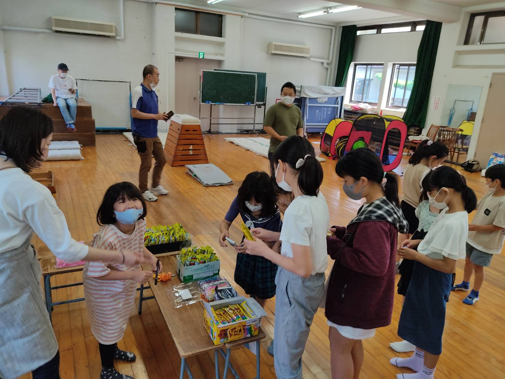

Host manager
Takashi Sasaki
農協観光からJAにキャリアチェンジ。働く傍ら、地元で子ども食堂を立ち上げる。 新潟市出身、千葉県流山市在住、のっぺをこよなく愛す一児のパパ。 サッカーは柏レイソル、野球はロッテ、ラグビーはグリーンロケッツ東葛、自らはゴルフと幅広い。

毎月第一土曜日 9:00 - 13:00
体育館開放 9:00 〜 食事 11:00 〜 参加料金は無料！お気軽にご参加ください。
松ヶ丘子ども食堂とは、子供の居場所づくりの為のイベントです。 子供＝貧困、だけではない。両親が共働きで、普段は家の中で過ごしている。 周りに知り合いが少なく、地域の人と交流したい。 など、地域のコミュニティとして利用してもらいたい。
| 2022年7月9日 | 開催致します |
| 2022年6月4日 | 開催致しました |
| 2022年5月7日 | 開催致しました |
| 2022年4月2日 | 開催致しました |
農協観光からJAにキャリアチェンジ。働く傍ら、地元で子ども食堂を立ち上げる。 新潟市出身、千葉県流山市在住、のっぺをこよなく愛す一児のパパ。 サッカーは柏レイソル、野球はロッテ、ラグビーはグリーンロケッツ東葛、自らはゴルフと幅広い。